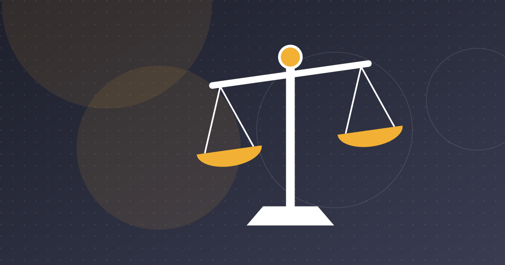

Bolt Withdraws From Tunisia After Money-Laundering Probe
Six weeks after Tunisia suspended it over money-laundering and licensing allegations, Bolt shut down without explanation. What happened and why it matters.

Key takeaways
- Tunisia suspended Bolt and other ride-hailing apps on 24 March 2025 over suspected money laundering, tax evasion and missing licences.
- About 12 million dinars were seized from the accounts of several providers, including Bolt, and the companies were struck from the business register.
- Bolt denied the allegations, kept running for about six weeks, then shut down on 9 May 2025 without public explanation.
- The case highlights the lack of a legal framework for digital platforms, a risk that also applies to fintechs.
Ride-hailing app Bolt stopped working in Tunisia on 9 May 2025, about six weeks after the authorities suspended it as part of a money-laundering and tax-fraud investigation. Bolt gave no public reason for the shutdown. Its withdrawal from Tunisia raises questions about licensing, cross-border money flows and regulatory risk that apply to fintech and other platform businesses as well.
How the Bolt case started
On 24 March 2025, Tunisia's interior ministry announced it had suspended several ride-hailing apps. According to Launch Base Africa, the investigation was led by the National Guard's unit for complex financial crimes under the economic and financial prosecutor's office. A source close to the matter told the publication that Bolt was the main target.
The allegations were serious:
- Money laundering and tax evasion by managers of the apps.
- Operating without the required licences, or with "false authorisations".
- Undeclared bank accounts allegedly used to move money abroad.
The measures were immediate. The companies involved were removed from the national business register and their offices were closed. About 12 million Tunisian dinars (roughly €3.5 million, or $3.8 million at the exchange rate TechCabal used) were seized from the accounts of several app-based transport providers, including Bolt. The amount was not seized from Bolt alone.
Bolt's response
Bolt rejected the accusations. It told TechCabal they were "completely unfounded", said the authorities had acted without an investigating judge, and said it had not been given a chance to respond. It also warned that banning foreign ride-hailing companies would set a worrying precedent and harm competition, and it insisted that it complied with Tunisian law.
We found no report of a formal court appeal. The public record shows that Bolt denied the allegations and criticised the process.
Six weeks of confusion
The app did not shut down when the suspension was announced. It kept working for weeks, creating uncertainty for drivers and riders. According to Businessnews.com.tn, Bolt suspended its commission on rides during this period, which encouraged drivers to keep using the app despite the sanctions.
On 9 May 2025, the service stopped. Users opening the app saw a message reading "Bolt n'est pas encore disponible ici" ("Bolt is not yet available here"), according to We Are Tech Africa, while Businessnews.com.tn reported the wording "Bolt n'existe plus ici". Bolt did not publicly explain why it had withdrawn.
Bolt had operated in Tunisia since 2019, mainly in Tunis, Sfax and Sousse, and provided income to more than 5,000 drivers, many of them independent, according to We Are Tech Africa.
A state-backed ride-hailing app
During the crackdown, the transport ministry announced plans for an unnamed state-backed ride-hailing app. According to TechCabal, it would cap fares at 1.5 times the regular taxi meter rate, offer digital payments and real-time tracking, and operate through registered taxis. The stated aim was to keep revenue in Tunisia rather than see it sent abroad by foreign platforms. We could not confirm whether the app has launched.
Other platforms were active when TechCabal reported on the case in March 2025, including Yassir, Heetch and the local app Amigo.
The real issue: no legal framework for platforms
Beyond the allegations against Bolt, the case exposed a gap. As We Are Tech Africa noted, Tunisia has no clear legal framework for digital platforms such as ride-hailing apps. Without licensing rules written for the sector, operators work in a grey zone and are exposed to sudden administrative decisions instead of a predictable compliance path.
Why it matters for fintech
The Bolt case is about transport, but many of its issues also affect fintech:
- Money flows abroad. Platforms collect payments in dinars and pay foreign parent companies. Under Tunisia's 1976 foreign-exchange law, these flows face close scrutiny. See FX code reform.
- Licensing. Any business that handles payments needs the right authorisation. See payment institutions in Tunisia.
- AML enforcement. Accounts can be frozen quickly once a money-laundering investigation opens. Strong compliance work is a basic requirement, not an extra. See AML/CFT and e-KYC rules.
For foreign platforms and local startups alike, the lesson is clear. In Tunisia, operating while waiting for regulation to catch up can carry real risk, and enforcement can move faster than legal clarity.
Frequently asked questions
Why was Bolt suspended in Tunisia?
On 24 March 2025 the interior ministry suspended several ride-hailing apps, with Bolt reported as the main target, over suspected money laundering, tax evasion, operating without licences and undeclared accounts used to move money abroad. Bolt called the allegations completely unfounded.
When did Bolt stop working in Tunisia?
The app stopped working on 9 May 2025, about six weeks after the suspension was announced. Bolt did not publicly explain the shutdown.
Is there a legal framework for ride-hailing apps in Tunisia?
Not a clear one. Tunisia has no dedicated licensing framework for digital ride-hailing platforms, which leaves operators exposed to sudden administrative action. The transport ministry announced a state-backed alternative in 2025.
Sources
- Tunisian authorities suspend Bolt operations and seize millions in money laundering probe — Launch Base Africa
- Tunisia to suspend Bolt for alleged tax evasion, launch state-backed ride-hailing app — TechCabal
- Tunisie : l'application Bolt cesse de fonctionner — Businessnews.com.tn
- L'application Bolt quitte la Tunisie après une suspension contestée — We Are Tech Africa
This article is for information only and is not legal, financial or investment advice. Figures are dated and sourced; check the latest official publications before making decisions.